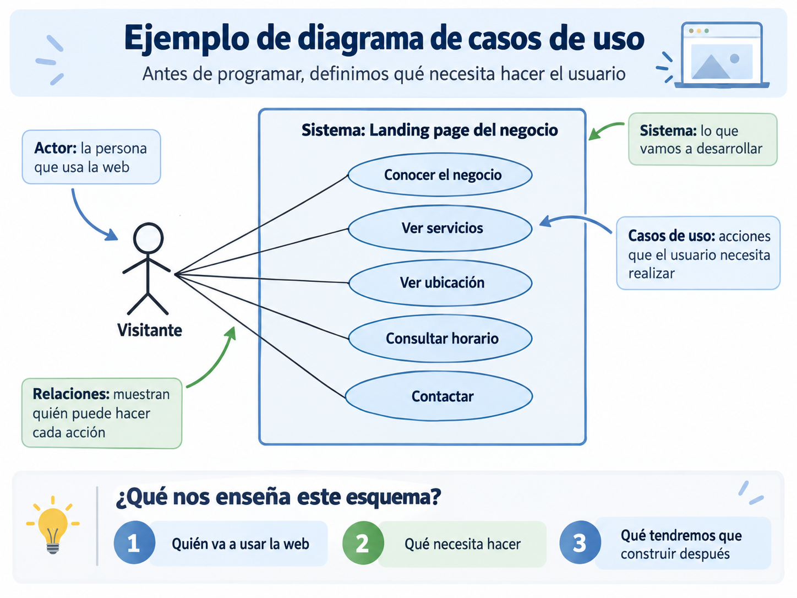

🍽️ Restaurante
Objetivo: reservas.
- Consultar carta.
- Ver horarios.
- Localizar.
- Reservar mesa.
Una guía para transformar una idea en una aplicación útil. Empezamos por el problema, la persona usuaria y su objetivo.
No desarrollamos páginas porque sí. Desarrollamos soluciones para que una persona pueda conseguir algo.
Un cliente nos dice: «Tengo un negocio y quiero una página web para que la gente pueda conocerme».
Antes de abrir VS Code y escribir HTML, debemos hacernos unas preguntas sencillas. Así entendemos qué estamos desarrollando, quién va a utilizarlo y qué necesita hacer esa persona.
El cliente podría responder: «Quiero que sepan qué hago, dónde estoy y cómo pueden contactar conmigo».
Con esa información ya podemos empezar a analizar lo que necesita la web.
En este ejemplo solo hay un actor importante: el visitante o cliente potencial. Un actor es una persona que interactúa con nuestro sistema.
En este ejemplo, nuestro actor será simplemente una persona que llega a la web para conocer el negocio.
El visitante necesita conocer el negocio, ver dónde está y saber cómo contactar. Estas necesidades pueden convertirse en nuestros primeros casos de uso.
Entender qué hace y a quién ayuda.
Encontrar la ubicación con facilidad.
Localizar teléfono, email o formulario.
Un caso de uso representa algo que un usuario necesita poder hacer con nuestro sistema.
El diagrama reúne cuatro ideas: el actor (quien usa la web), el sistema (la landing page que vamos a desarrollar), los casos de uso (las acciones que necesita realizar) y las relaciones (quién puede hacer cada acción).

Cuando sabemos qué necesita el visitante, podemos pensar en las secciones de la página.
| Necesidad del usuario | Posible sección de la web |
|---|---|
| Conocer el negocio | Inicio / presentación |
| Saber qué ofrecemos | Servicios |
| Ver dónde estamos | Ubicación / mapa |
| Contactar | Teléfono, email o formulario |
Ahora sí empieza a aparecer la estructura de nuestra página.
LANDING PAGE Inicio ↓ Quiénes somos ↓ Servicios ↓ Dónde estamos ↓ Contacto
CLIENTE NOS CUENTA SU IDEA
↓
¿QUÉ QUIERE CONSEGUIR?
↓
¿QUIÉN USARÁ LA WEB?
↓
¿QUÉ NECESITA HACER?
↓
CASOS DE USO
↓
¿QUÉ CONTENIDO NECESITAMOS?
↓
DISEÑAMOS LA PÁGINA
↓
ESCRIBIMOS EL CÓDIGOLos diagramas de casos de uso nos ayudan a decidir qué tenemos que construir antes de empezar a construirlo.
Una pequeña cafetería de barrio quiere una página web. El propietario quiere que una persona que encuentre la web pueda conocer la cafetería, saber qué productos ofrece, consultar dónde se encuentra, consultar el horario y encontrar una forma de contacto.
Visitante
Si el visitante necesita hacer todo esto, ¿qué tendrá que tener nuestra página?
En este momento ya hemos pasado del análisis de necesidades a la estructura de nuestra página.
Ya sabemos qué tenemos que construir. Ahora podemos decidir cómo construirlo.
<header>
...
</header>
<main>
<section id="inicio">...</section>
<section id="servicios">...</section>
<section id="ubicacion">...</section>
<section id="contacto">...</section>
</main>
<footer>...</footer>Necesidad
↓
Caso de uso
↓
Sección de la web
↓
HTML
↓
CSSUna web útil no nace al escribir una etiqueta HTML. Antes tomamos decisiones para que una persona pueda resolver una necesidad.
PROBLEMA ↓ USUARIO ↓ OBJETIVO ↓ CASOS DE USO ↓ DISEÑO ↓ DESARROLLO ↓ PRUEBAS
Antes de «¿qué código escribo?», pregunta: «¿qué necesita conseguir el usuario?».
Cuando alguien empieza a programar suele pensar primero en HTML, colores, botones, Bootstrap, JavaScript o componentes. Son herramientas: sirven para construir, pero no explican qué debemos construir.
Abres VS Code y piensas: «Voy a hacer una página para una peluquería canina». Es un comienzo, pero deja preguntas abiertas: ¿para quién?, ¿para qué?, ¿qué problema resolvemos?, ¿qué tendrá que poder hacer el visitante?, ¿qué resultado esperamos y qué ocurre después de una acción?
Quién la utilizará, qué necesita, qué quiere conseguir, qué información verá y qué acciones podrá realizar.
Primero entendemos el problema. Después decidimos qué construir.
Piensa en una web que uses. ¿Querías comprar, reservar, informarte, contactar o aprender? Esa respuesta importa más que sus colores.
Una web no es solo una «página bonita»: debe permitir conseguir algo.
Objetivo del negocio: conseguir nuevos clientes.
Objetivo: encontrar una peluquería, consultar servicios y pedir cita.
De esos objetivos nacen servicios, precios, horarios, dirección, fotografías, teléfono, WhatsApp y el botón Contactar.
Los elementos de una web no aparecen arbitrariamente: responden a una necesidad.
El usuario es quien emplea la aplicación. En una clínica veterinaria puede ser quien busca veterinario, un cliente habitual, alguien con una urgencia o el profesional.
¿Qué quiere conseguir esta persona cuando entra en nuestra aplicación?
No hacen falta perfiles complejos todavía: basta con mirar la necesidad con atención.
Un caso de uso describe una acción que un usuario realiza con un sistema para conseguir un objetivo.
Primero entendemos qué hace una persona y para qué. Los diagramas formales pueden venir después.
ACTOR + ACCIÓN + OBJETIVO
Un cliente consulta los servicios de una peluquería para decidir si quiere pedir cita.
Cliente.
Consultar servicios.
Decidir si contrata el servicio.
Completa: «Un/a ________ ________ para ________» para una biblioteca, tienda o academia.
Objetivo: reservas.
Objetivo: vender.
Objetivo: oportunidades.
Un actor es quien interactúa con el sistema: visitante, cliente, administrador, trabajador, profesor o alumno.
No es una persona concreta. No sería «Inma», sino «Administrador».
Pedir prestado un libro.
Buscar libros, consultar disponibilidad, iniciar sesión, ver préstamos y devolver libros.
Inicio de sesión normal: email → contraseña → pulsa iniciar sesión → accede.
Flujo alternativo: si la contraseña es incorrecta, el sistema informa del problema y permite intentarlo de nuevo.
Más adelante quizá lo programemos con if (...). Antes hay que haber pensado que esa situación puede ocurrir.
Historia: «Como cliente quiero consultar los servicios de la peluquería para saber si ofrecen el tratamiento que necesita mi perro.»
La historia expresa la necesidad; el caso de uso explica cómo interactúa la persona con el sistema.
| Historia de usuario | Caso de uso |
|---|---|
| Qué necesita. | Cómo lo consigue. |
| Muy breve. | Más detallado. |
| «Como… quiero… para…» | Actor + acción + resultado. |
Conviene separar cuatro ideas que se parecen, pero no son lo mismo.
NECESIDAD Quiero contactar ↓ CASO DE USO Contactar con la empresa ↓ FUNCIONALIDAD Formulario de contacto ↓ INTERFAZ Campos + botón Enviar
Si el caso de uso es «solicitar una cita», la interfaz puede necesitar seleccionar servicio y fecha, escribir nombre y teléfono, y enviar la solicitud.
[ Servicio ▼ ] [ Fecha ] [ Nombre ] [ Teléfono ] [ Solicitar cita ]
Este esquema sencillo empieza a acercarnos a un wireframe. Cuando sabemos qué necesita hacer el usuario, Penpot nos ayuda a organizar esos elementos en pantalla.
Necesidad: quiero ver el teléfono. Caso de uso: consultar teléfono.
<button>Ver teléfono</button>boton.addEventListener("click", ...)
JavaScript no crea la necesidad. JavaScript implementa el comportamiento que hemos decidido que necesita el usuario.
Sí. Podemos representar de forma sencilla los actores y las acciones relacionadas. Estos esquemas se relacionan con UML, pero ahora no necesitamos estudiar notación avanzada.
CLIENTE │ ├── Consultar servicios ├── Pedir cita └── Contactar
Para empezar basta con papel y lápiz, una libreta, una pizarra o un documento de texto. Lo importante es pensar, no la herramienta.
Opción sencilla para crear diagramas, flujos y esquemas visuales sin programar.
Pizarra visual útil para organizar ideas, identificar usuarios y trabajar en grupo.
Herramienta especializada para diagramas más formales.
Ampliación para alumnado con más nivel: permite describir diagramas mediante texto.
En este curso no necesitas dominar ninguna de estas herramientas. Para empezar, papel y lápiz o diagrams.net son más que suficientes.
Vamos a crear una web para una academia. El actor es Visitante; quiere conocer cursos, consultar precios y contactar.
Visitante ↓ Consultar cursos Consultar precios Contactar
Si puedes explicar este esquema con tus propias palabras, has entendido la idea principal.
Proyecto: una web para una cafetería. Intenta responder antes de abrir la solución.
Objetivo: conseguir clientes. Usuario: una persona que busca cafetería.
Necesidades: productos, precios, ubicación y horarios.
Casos: consultar carta, ver horarios, localizar y contactar.
Usa este test antes de abrir VS Code. No es un examen: es una herramienta para comprobar que sabes qué construir.
Si no puedes responder estas preguntas, todavía no deberías empezar a programar.
Proyecto: queremos digitalizar una academia de idiomas. La puntuación es solo para autoevaluarte; puedes repetir el test.
Esta plantilla no se guarda ni se envía: es tu mapa antes de diseñar y programar.
No empezamos desarrollando. Empezamos entendiendo.
PROBLEMA ↓ USUARIO ↓ OBJETIVO ↓ CASO DE USO ↓ DISEÑO ↓ CÓDIGO
Las herramientas cambian. El objetivo permanece: construir algo que permita a una persona resolver una necesidad.
Ya sabemos qué tiene que poder hacer nuestra aplicación. El siguiente paso es decidir cómo organizarlo visualmente.